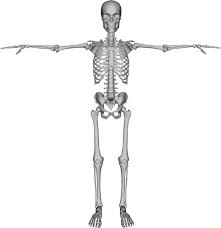

कंकाल

कंकाल मानव शरीर के ढाँचे को कहते हैं जो अस्थियों से और कुछ भागों में उपास्थियों (कार्टिलेज) से मिलकर बना है। उपास्थिनरम और लचीली हड्डियों को कहते हैं जिनमें से कई एक समय पाकर अस्थियों में बदल जाती हैं। साधारणत: मेरुदंडधारी प्राणियों में, जिनमें मनुष्य भी है, कंकाल शरीर के भीतर रहता है अत: इसे आंतरिक कंकाल कहते हैं। कुछ प्राणियों में, जैसे कछुए में, आंतरिक और बाह्य दोनों कंकाल होते हैं। परंतु जिन प्राणियों में मेरुदंड नहीं होता उनमें केवल बाह्य कंकाल ही होता है। मनुष्य में बाह्य कंकाल केवल नख और दाँत के इनैमल के रूप में ही दिखाई पड़ता है।
- मानव कंकाल दो भागों में विभाजित किया जा सकता है;
- अक्ष-कंकाल (ऐक्सियल स्केलिटन)सिर और धड़ की अस्थियाँ;
- शाखाकंकाल (अपेंडिक्युलर स्केलिटन) ऊर्ध्व और अध: शाखाओं की अस्थियाँ (बाहु, भुजा, हाथ और जाँघ, टाँग, पैर)।
कंकाल में कुल 206 अस्थियाँ होती हैं जो निम्नलिखित प्रकार से वर्गीकृत की जा सकती हैं :
अस्थियों का वर्गीकरण
आकार की दृष्टि से अस्थियों को चार वर्गो में विभाजित कर सकते हैं, लंबी, छोटी, चपटी और विषम आकारवाली।
लंबी अस्थियाँ
ये ऊर्ध्व और अध: शाखाओं में होती हैं और गति में उत्तोलनदंड (लीवर) की भाँति काम करती हैं। इनमें एक दंड और दो सिरे होते हैं। दंड नली के सदृश होता है जिसके बीच में मज्जागुहा होती है और दीवार ठस (अविरल) अस्थि की बनी होती है। सिरे फैलकर संधि बनाने में भाग लेते हैं। इन सिरों में विरल (स्पॉञ्जी) अस्थि होती है। मज्जागुहा और विरल अस्थि के रिक्त स्थानों में मज्जा भरी रहती है।
छोटी अस्थियाँ
ये बहुभुजाकार होती हैं और विरल अस्थि की बनी होती हैं। विरल अस्थि के चारों और अविरल अस्थि की एक पतली तह होती है। कंकाल में ये उन स्थानों पर रहती हैं जहाँ दृढ़ता के साथ-साथ गति की भी आवश्यकता होती है, जैसे कलाई (मणिबंध) और प्रपटोपास्थि।
चपटी अस्थियाँ
इनमें अविरल अस्थि की दो तहें होती हैं जिनके बीच में विरल अस्थि रहती है। इनकी बनावट कहीं कहीं अंगों की रक्षा करती है, जैसे खोपड़ी और वक्ष, अथवा इनकी चौड़ी सतह से पेशियाँ लगी रहती हैं, जैसे स्कैपुला। खोपड़ी की कुछ अस्थियों में विरल पदार्थ के स्थान पर गुहा होती है जिनके भीतर श्लेष्म-झिल्ली (म्यूकस मेंब्रेन) लगी रहती हैं। गुहाओं को वायुविवर कहते हैं। ये विवर आनन अस्थियों में होते हैं और नासिका से इनका संबंध रहता है। कंकाल के भार को बढ़ाए बिना ही ये मुख की आकृति बनाते और वाणी को प्रतिध्वनि प्रदान करते हैं।
विषम आकारवाली अस्थियाँ
ये भिन्न भिन्न रूप और आकार की होती हैं। कशेरुका और खोपड़ी की कुछ अस्थियाँ इस प्रकार की होती है।
अस्थिमज्जा
लंबी अस्थियों की मज्जा (बोन मैरो) गुहा और विरल अस्थियों के रिक्त स्थानों में भरी रहती हैं। बालकों में सब मज्जा लाल होती हैं, परंतु ज्यों ज्यों आयु बढ़ती है, यह पीली होने लगती है। तरुण अवस्था में लाल मज्जा केवल विरल अस्थियों में ही रह जाती है और लंबी अस्थियों की मज्जा गुहाओं में पीली मज्जा पाई जाती है। रुधिरकणिका की उत्पत्ति प्रधानत: लाल मज्जा करती है और इस कारण इसकी रुधिरसंप्राप्ति प्रचुर मात्रा में होती है। पीली मज्जा लगभग समस्त ही चरबी होती है और अपेक्षाकृत इसकी रुधिरप्राप्ति नहीं के बराबर होती है।
अस्थिच्छद (पेरिऑस्टियम)
अस्थियों के चारों ओर तंतुमय झिल्ली (फ़ाइब्रस मेंब्रेन) की खोली होती है जिसे अस्थिच्छद कहते हैं। अस्थिच्छद की दो परतें होती हैं। बाहरी परतें अस्थि को सीमाबद्ध करती हैं। भीतर की परत बड़े महत्व की होती है, क्योंकि इसमें पोषण करने के अतिरिक्त अस्थि बन जाने की सामर्थ्य भी होती है।
खोपड़ी
खोपड़ी 22 अस्थियों से मिलकर बनी है, जो अधोहन्वस्थि (मेंडिबिल) को छोड़कर टाँकों द्वारा इस प्रकार जुड़ी रहती है कि उनमें एक दूसरे के सापेक्ष कोई गति नहीं होती। खोपड़ी को दो भागों में विभाजित किया जाता है-
- आननभाग
- कपाल
आनन भाग
खोपड़ी के आनन भाग से चेहरे का ढाँचा, नासिका तथा मुँह की गुहा बनती है। नेत्रगुहा कपाल और आनन अस्थियों के बीच दो आश्रवास्थियाँ (लैक्रिमल) दो नासास्थियाँ, दो नासिका कौंका, और एक हलास्थि (वोमर)। इनमें से कुछ अस्थियाँ जैसे तितवस्थि और ललाटास्थि, कपाल और आनन के भाग हैं।
कपाल
कपाल (क्रेनियम) अंडाकार होता है और भीतर स्थित मस्तिष्क की रक्षा करता है। कपाल आठ अस्थियों से मिलकर बना है। एक ललाट अस्थि, दो पार्श्विक अस्थियाँ, एक अनुकपाल, एक तितवस्थि (इथमॉइड) एक जतुकास्थि (स्फिनॉइड) और दो शंखास्थि (टेंपोरल)। कपाल सब ओर से बंद रहता है। केवल इसकी तली में कुछ छोटे-छोटे छिद्र रहते हैं, जिनमें से तंत्रिका और वाहिकाएँ जाती हैं। तली में पीछे की ओर एक बड़ा रध्रं होता है जिसमें से मस्तिष्क का एक भाग (मस्तिष्क पुच्छ, मिड्डला ओबलॉड्गेंटा) निकलकर रीढरज्जु से मिलता है। कपाल का वर्णन दो भागों में किया जा सकता है:-
(क) गुंबज के आकार की छत, और
(ख) तली, जो विषम अस्थियों से मिलकर बनी होती है।
- गुंबज के आकारवाली छत
यह छह अस्थियों से मिलकर बनी होती है। आगे ललाटास्थि, इसके पीछे दो पार्श्विक अस्थियाँ और सबसे पीछे अनुकपालास्थि रहती है। बराबरवाली भीत के बनाने में शंखास्थियाँ भी भाग लेती हैं। इन अस्थियों के बीच की तंतुसंधियों को सीवनी कहते हैं। ललाटास्थि और दोनों पार्श्विक अस्थियों के बीच की सीवनी को कॉरोनैल, दोनों पार्श्विक अस्थियां के बीच वाली को सैजिटल और पीछे की ओर की पार्श्विक अस्थियों और अनुकपाल के बीचवाली सीवनी को लैंब्डॉएड कहते हैं।
- कपाल के विवर
जन्म के समय कपाल की अस्थियाँ पूर्ण रूप से परिपक्व नहीं होतीं और पार्श्विक अस्थि के कोनों पर कोमल झिल्ली रहती है। इन स्थानों को कपाल के विवर कहते हैं। जन्म के समय इन विवरों की अस्थियाँ एक दूसरे पर आकर कपाल की नाप को छोटा बना देती हैं। सबसे बड़ा विवर आगे की ओर रहता है, जहाँ सैजिटल और कॉरोनैल सीवनी मिलती है। यह जन्म के पश्चात् लगभग 18 मास तक बंद नहीं होता। पीछेवाला विवर सैजिटल और लैंब्डॉएड सीवनी के संगम पर होता है और यह जन्म के कुछ ही समय बाद बंद हो जाते हैं।
- कपाल की तली
यदि छत को हटा दें और कपाल की तली को ऊपर से देखें तो तीन विभाग या विवरक दिखाई देते हैं। ये विवरक छह अस्थियों से मिलकर बने होते हैं। ललाटास्थि, तितवास्थि, जतुकास्थि, दो शंखास्थियाँ और अनुकपाल।
आगे वाला विवरक तीनों में सबसे कम गहरा होता है, और इसमें मस्तिष्क और फ़्रौटल पालि रहती है। इस विवरक के बीच का भाग इथमाइड अस्थि से बनता है। इसी अस्थि से नासिका की छत भी बनती है और इसके छोटे-छोटे छिद्रों में से घ्राणतंत्रिका प्रवेश करती है। तितवास्थि और ललाटास्थि इस विवरक को नेत्रगुहा से पृथक् करती हैं।
मध्य विवरक के बीच जतुकास्थि के एक छोटे से विभाग में पोषग्रंथि (पिटयूटरी) पिंड रहता है। इस विभाग के दोनों ओर एक विस्तीर्ण और गहरा अवतल होता है जिसमें प्रमस्तिष्क की शंखपालि रहती है। इस अवतल की पीछे की सीमा शंखास्थि का प्रस्तर (पीटरस) भाग बनाती है, जिसके भीतर मध्यकर्ण और कान का गहन (लैबीरिंथ) रहता है।
पीछे का विवरक सबसे अधिक गहरा होता है और इसमें अनुमस्तिष्क, मध्यमस्तिष्क, सेतु (पौंस) और मस्तिष्कपुच्छ (मैडुला औब्लाँगेटा) रहता है। इसी विवरक में वह बड़ा रध्रं होता है जिसमें से मस्तिष्कपुच्छ (मैडुला औब्लाँग) जाता है। बड़े रध्रं के दोनों ओर जुगलर रध्रं होता है जिसमें से मातृका (जुगलर) शिरा और कुछ कपालतंत्रिका कपाल से बाहर आती हैं। इस विवरक की पीछे की सीमा अनुकपालास्थि बनाती है जिसमें ग्रीवा की प्रसारण पेशियाँ लगी रहती हैं।
यदि कपाल की तली में अस्थिभंग हो तो बहुधा शरीर के विशेष भाग से रक्तस्राव के चिह्न इसका संकेत करते हैं कि अमुक विवरक में अस्थिभंग हुआ है। उदाहरणार्थ, कपाल में चोट के बाद यदि नासिका, पलक या नेत्रश्लेष्मिका (कंजंक्टाइवा) के नीचे रक्तप्रवाह हो तो सामने के विवरक में और कान से रक्त का आना बीच के विवरक में अस्थिभंग होना बताता है। ग्रीवा के पीछे की चोट और प्रसारण पेशियों में रक्त के चिह्न पीछे वाले विवरक में अस्थिभंग होने का संकेत करते हैं।
खोपड़ी का आनन भाग
आनन अस्थियाँ अधोहन्वस्थि का छोड़कर आपस में और कपाल के सामने तथा नीचे की ओर टाँकों द्वारा बड़ी दृढ़ता से जुड़ी रहती हैं। नेत्रगुहा और नासिकागुहा प्रधानतया आनन अस्थियों से ही बनी हैं। परंतु इनकी छत कपाल द्वारा बनती है। आनन अस्थियों की सामान्य रचना का ज्ञान खोपड़ी के चित्रों का अध्ययन करने से हो सकता है। एक ऊर्ध्वहन्वस्थि, जिसमें ऊपर के दाँत रहते हैं, दूसरी से नासारध्रं के नीचे मिलती है। नासारध्रं के ऊपर की ओर दोनों नासास्थियाँ मिलती हैं। नेत्रगुहा के भीतर के किनारे के पासवाली अस्थि का नाम आश्रवास्थि (लैक्रिमल) है। आश्रवास्थि और ऊर्ध्वहन्वस्थि के बीच नासिकाश्रु नाल होती है जिसके द्वारा आँसू नेत्र से नासिका में आता है। नेत्रगुहा की बगल का किनारा गंडास्थि है। यह अस्थि पीछे की ओर शंखास्थि के ऊपर उभार से मिलकर ज़ाइगोमैटिक चाप बनाती है। यह चाप जुए की भाँति आनन और कपाल की आस्थियों को मिलाता है।
हलास्थि (दोमर)
इस पतली त्रिभुजाकार अस्थि से नाक की भित्तिका (सेप्टम) का पिछला भाग बनता है। नासिका की बगल की भीत में तीन कौंका होते हैं। इनमें से ऊपर के दो तितवास्थि के भाग और सबसे नीचे का कौंका पृथक् अस्थि है। ताल्वस्थि केहुनी के आकार की होती है। दोनों ताल्वस्थियों के समतल भाग मिलकर तालु का पिछला भाग बनाते हैं। तालु के अगले भाग से उर्ध्वहन्वस्थि बनती है। ताल्वस्थि के खड़े भाग से नासिका की बगलवाली भीत का पिछला भाग बनता है।
अधोहन्वस्थि
आनन की अस्थियों में से केवल यही अस्थि पर्याप्त रूप से गति करती है। इस गति द्वारा भोजन का चर्वण और ध्वनियों का उच्चारण संभव होता है। जन्म के समय अधोहन्वस्थि के दो भाग होते हैं, जो सामने की ओर चिबुक पर एक वर्ष की आयु तक अवश्य मिल जाते हैं। चिबुक का आगे की ओर उभाड़ मनुष्य जाति की विशेषता है।
अधोहन्वस्थि के समतल भाग में दाँत लगे रहते हैं और इसका खड़ा भाग कपाल की शंखास्थि से जुड़ा रहता है। इसी भाग में चर्वण पेशियाँ लगी रहती हैं। अधोहन्वस्थि के ये दोनों भाग मिलकर एक कोण बनाते हैं। यह कोण युवावस्था में लगभग 1100 का होता है।
मेरुदंड
मेरुदंड (वर्टेब्रल कॉलम) 33 कशेरुकाओं से मिलकर बना है। इनमें 7 ग्रीवा, 12 पृष्ठ, 5 कटि, 5 त्रिक और 4 अनुत्रिक कशेरुकाएँ कहलाती हैं। कशेरुकाएँ एक दूसरे के ऊपर सटी रहती हैं। ये आपस में अंत: कशेरुकाओं, उपास्थियों, स्नायुओं और पेशियों द्वारा दृढ़ता से जुड़ी रहती हैं। ग्रीवा, पृष्ठ और कटि कशेरुकाएँ अलग-अलग गतिशील होती है। ये मुख्य कशेरुकाएँ कहलाती है। त्रिक और आधुनिक कशेरुकाएँ जुड़कर त्रिक और अनुत्रिक बनाती हैं। इनको गौण कशेरुका कहते हैं। युवा पुरुष में मेरुदंड की लंबाई लगभग 28 इंच होती है और स्त्रियों में 3 या 4 इंच कम। कुल लंबाई का लगभग एक चौथाई भाग अंत: कशेरुका उपास्थि बनाती है।
मेरुदंड को शरीर का अक्ष कहते हैं। यह धड़, सिर और ऊर्ध्व शाखा का भार वहन करता है। मेरुदंड में पर्याप्त मात्रा में गति भी संभव है। मेरुदंड उस तनाव अथवा दबाव का भी अवरोध करता है जो अधिक गति या मनुष्य के अधिक भार उठाने के कारण उत्पन्न हो जाता है। यह आघात अथवा दहल से रक्षा करता है। इसके द्वारा धड़, सर और ऊर्ध्व शाखा का भार, श्रोणिमेखला से होकर, अध:शाखाओं में चला जाता है। मेरुदंड वक्ष को दृढ़ता से सँभाले रखता है। इसमें शरीर की बड़ी समर्थ पेशियाँ लगी रहती हैं। मेरुदंड कोमल मेरुरज्जु की रक्षा करता है। इस प्रकार मेरुदंड शरीर का एक बड़ा विलक्षण अंग है और बड़े उपयोगी कार्यो को पूर्ण करता है। इसके अतिरिक्त कशेरुका में लाल मज्जा होती है जो रुधिरकाणिका के निर्माण के लिए परम आवश्यक है।
समस्त कशेरुकाओं की सामान्य बनावट एक सी ही होती है। तथापि प्रत्येक भाग में कुछ विशेषताएँ रहती हैं। प्रत्येक कशेरुका के दो मुख्य भाग होते हैं; कशेरुका-काय आगे की ओर और इसके पीछे कशेरुकाचाप। दोनों के बीच एक बड़ा रध्रं होता है। दोनों के बीच एक बड़ा रध्रं होता है। सब कशेरुकारध्रं मिलकर पूरे मेरुदंड में एक नाल बनाते हैं जिसमें मेरुरज्जु सुरक्षित रहती है।
कशेरुकाकाय
यह वर्तुलाकार होता है और प्रधानतया विरल (स्पॉञ्जी) अस्थि का बना होता है। ऊपर और नीचे की सतहों पर चक्राकार अविरल अस्थि होती है जो अस्थिशिर (एपिफिसिस) कहलाती है। दोनों सतहें चिपटी और खुरखुरी होती हैं जिससे अंत: कशेरुका उपास्थि भली भाँति जुड़ सके। ऊपर से नीचे की ओर कशेरुकाओं का आकार कटित्रिक (लंबो सैक्रल) संधि तक बड़ा होता जाता है, क्योंकि मेरुदंड पर पड़ने वाला भार भी नीचे की ओर बढ़ता जाता है। कटित्रिक संधि से समस्त भार श्रोणिमेखला द्वारा होकर अध: शाखाओं में चला जाता है, इसलिए त्रिक और अनुत्रिक के नीचे के सिरे पतले होकर नुकीले हो जाते हैं।
कशेरुका चाप
दो पेडिकल और दो लैमिना से मिलकर बनता है। पेडिकल कशेरुका काय से पीछे की ओर निकली हुई दो छोटी छड़ें होती हैं। इनमें पीछे की ओर जाती हुई दो चपटी परतें लैमिना कहलाती हैं। जिस जगह दोनों लैमिनाएँ मिलती हैं वहाँ से पीछे निकले हुए उभाड़ को कशेरुकाकंटक (स्पाइनस प्रोसेस) कहते हैं। पेडिकल और लैमिरा के मिलने के स्थान से दो निकास (आर्टिक्युलर प्रोसेस) ऊपर की ओर और दो नीचे की ओर निकलते हैं जो समीपवर्ती कशेरुका के निकास से संधित होते हैं। इसी जगह से दो और आड़े प्रवर्ध (ट्रैंसवर्स प्रोसेस) बाहर की ओर निकले रहते हैं। समीपवर्ती कशेरुकाओं के पेडिकल के बीच अंत: करुशेका रध्रं होते हैं जिनमें से तंत्रिकाएँ बाहर निकलती हैं।
ग्रीवाकशेरुका के विशेष लक्षण
सिर को सँभालने और इसकी गति के कारण प्रथम और द्वितीय ग्रीवाकशेरुका की बनावट बहुत भिन्न होती है। प्रथम ग्रीवाकशेरुका, अथवा शिरोधर (ऐटलस), बिना काय की होती है। ऊपर की ओर यह अनुकपाल से जुटी होती है। इस संधि पर सिर को आगे और पीछे की ओर हिलाने की गति होती है। द्वितीय ग्रीवाकशेरुका अथवा अक्षकीकस (ऐक्सिस) की विशेषता एक दंताभ प्रवर्ध (ओडंटॉएड प्रोसेस) हैं, जो इसकी काय से ऊपर उठा रहता है। यह प्रवर्ध शिरोधर से विवर्तिका संधि बनाता है। इस संधि पर सिर शिरोधर, ऐटलस के ऊपर घूमता है।
मेरुदंडवक्र
जन्म के समय मेरुदंड पीछे की ओर उत्तल होता है, परंतु जिस समय शिशु तीन या चार मास का होता है और अपनी ग्रीवा को ऊपर उठाने लगता है, मेरुदंड की ग्रीवा विभाग सामने की ओर उत्तल हो जाता है; और छह या नौ मास के भीतर, जिस समय शिशु बैठने लगता है, कटि विभाग भी सामने उत्तल हो जाता है। वक्ष और त्रिक विभाग के पीछे की ओर के उत्तल 'मौलिक वक्र' कहलाते हैं। ये गर्भावस्था में ही बन जाते हैं और आयुपर्यंत रहते हैं। इनके कारण वक्ष और श्रोणिगुहाओं की धारणशक्ति बढ़ जाती है। ग्रीवा और कटि के सामनेवाले उत्तल 'सहकारी वक्र' कहलाते हैं। ये जन्म के बाद बनते हैं जिससे शरीर प्रलंब आसन में संतुलन प्राप्त कर सके।
ये वक्र कुछ तो इस करण बनते हैं कि कशेरुकाएँ आगे और पीछे की ओर एक सी मोटी नहीं होतीं, परंतु अंत : कशेरुका-उपास्थियों का समान मोटाई का न होना इनका मुख्य कारण है। वृद्धावस्था में अंत: कशेरुकाउपास्थि का क्षय होने लगता है और धीरे-धीरे सहाकारी वक्र भी कम होने लगते हैं। इसी कारण बुढ़ापे में कमर झुक जाती है।
पर्शुकाएँ
वक्ष में एक ओर बारह पर्शुकाएँ (रिब्स) होती हैं। ऊपर की सात पर्शुकाएँ मुख्य कहलाती हैं, क्योंकि ये उरोस्थि से पर्शुकोपास्थि द्वारा संधित होती हैं। शेष पाँच गौण पर्शुकाएँ कहलाती हैं, क्योंकि ये उरोस्थि से संधि नहीं बनातीं। इनमें से आठवीं, नवीं और 10वीं पर्शुकाएँ लंबी उपास्थि द्वारा अपने से ऊपरवाली उपास्थि से मिलती हैं। अंतिम दो चलायमान पर्शुकाएँ कहलाती हैं। इनकी उपास्थियों के नुकीले सिरे किसी दूसरी उपास्थियों से नहीं मिलते। सबसे ऊपर और नीचे की पर्शुकाएँ सबसे छोटी होती हैं, इसलिए वक्ष का आकार ढोल की तरह होता है। सबसे अधिक चौड़ाई सातवीं और आठवीं पर्शुका के समीप होती है।
पर्शुका एक लंबी चपटी अस्थि होती है जिसका अगला सिरा उपास्थि द्वारा उरोस्थि से मिलता है और पिछला कशेरुका से। बीच का भाग मुड़ा होता है। यह मोड़ सबसे अधिक पीछे की ओर होता है और पर्शुका का कोण बनाता है। इस बीच के भाग का ऊपर का किनारा गोल और नीचेवाला तीक्ष्ण होता है। नीचे के किनारे के पास ही एक अवतल में अंत: पर्शुका वाहिकाएँ और तंत्रिकाएँ रहती हैं। दो पर्शुकाओं के बीच अंत: पर्शुका पेशियाँ रहती हैं।